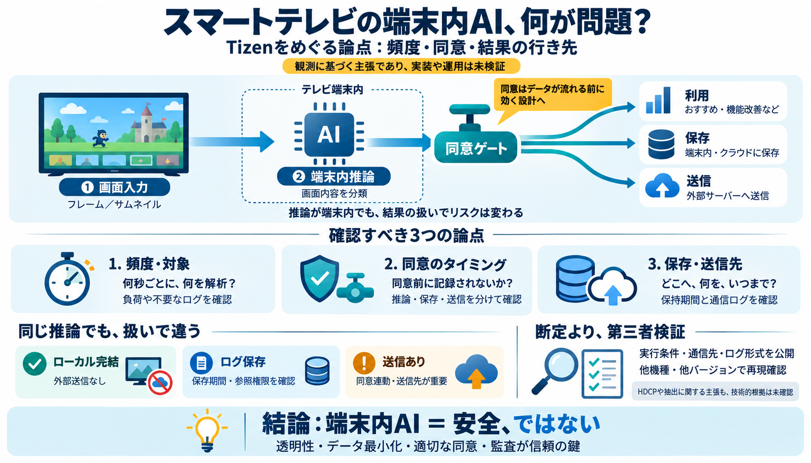

Tizen OS Explained: Features, Devices & Dev Guide 2026
As of 2026, Tizen 8.0 is the latest stable version shipping on current Samsung smart TVs, introduced with Samsung’s 2024…

As of 2026, Tizen 8.0 is the latest stable version shipping on current Samsung smart TVs, introduced with Samsung’s 2024…
1. One UI Tizen: Content and services may vary by region and are subject to change without notice. Agreement to Smart Hu…
| Type | Feature | Tizen 10.0 (2026) | Tizen 9.0 (2025) | Tizen 8.0 (2024) | Tizen 7.0 (2023) | Tizen 6.5 (2022) | Tizen…
1. One UI Tizen: Content and services may vary by region and are subject to change without notice. Agreement to Smart Hu…
These settings work on most Samsung TVs including: Samsung Crystal 4K, QLED, Neo QLED, and OLED TVs (2022–2026 models). …